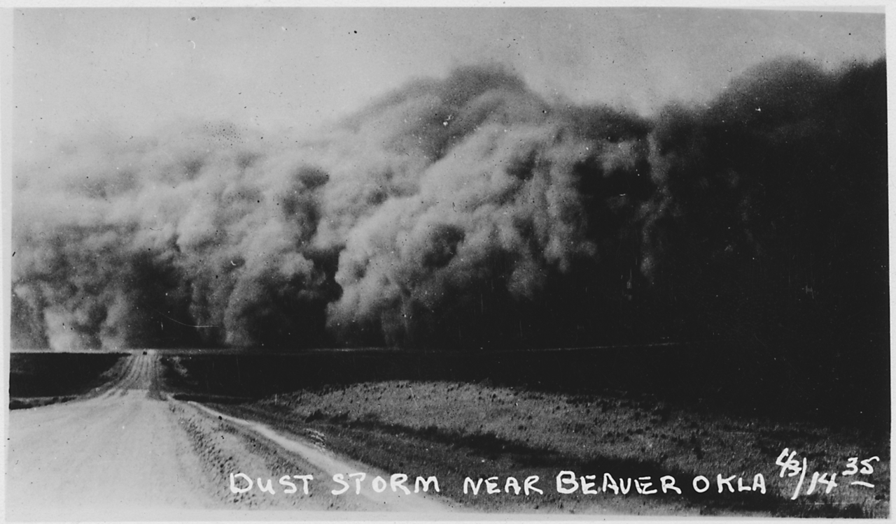

Overview
The novel opens in Oklahoma in 1933 with the birth of Dotty O’Toole (later Dotty Peisson) into the struggling family of Sheriff Slywood O’Toole and his wife, Mary Theresa. Poverty, dust storms, and dwindling resources shape their lives in barren Jack Oak County. Mary Theresa resents their circumstances, while Slywood tries to stay honest as his scruples weaken. Dotty’s first years pass in constant dust storms, in a home strained by poverty and quarrels. In the end the family leaves Jack Oak County, which no longer appears in newer atlases.
Summary
The novel opens by fixing the date and the authorities of the day: Pius XI is Pope in Rome, Roosevelt II is President in Washington, and Murray I is Governor in Oklahoma City, all on October 15, 1933 (the Fourth Sunday of Autumn), which is also the Twenty-Sixth year of the State and the One Hundred and Fifty-Eighth of the Republic. On this day a daughter is born to Sheriff Slywood O’Toole and his wife, Mary Theresa. She will be known as Dotty O’Toole and later as Dotty Peisson.
The chapter then goes back to the circumstances of Dotty’s conception. On a cold January night, Slywood and Mary Theresa went to a dance at the barn of the Bohannons in a neighboring county seat. Mary Theresa, who finds the talk about economic theories depressing, complains about the bleak atmosphere. On the drive home she and Slywood begin a serious argument over their precarious finances and whether to use county money for personal needs. The argument continues at home. Mary Theresa locks herself in another room, and Slywood breaks in and rapes her. Dotty is conceived that night.
Dotty is born on October 15, 1933, joining older siblings Floyd and Catherine. Mrs. Slater comments on Dotty’s fierce expression as a newborn, predicting she will be both pretty and mean. Mary Theresa admits to seeing “hate” in Dotty’s eyes even at three days old.
The family lives in Jack Oak County, a “defective” or “provisional” county without a proper county seat, where official business is done from time to time in private homes. Soon a “Black Blizzard” of dust storms, lasting years, descends on the Great Plains. Slywood, still sheriff, conducts many sheriffs’ sales during the foreclosures but makes very little money from them. Over time he uses up the county funds, the family’s savings, and whatever else they have. When their last cow dies and the windmill collapses for the last time, Slywood packs up his family, takes the thirteen dollars left in the county treasury, and leaves. When he closes the front door, the story of Jack Oak County ends.